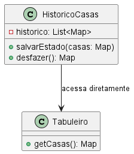

>
>sem violar o encapsulamento, captura e externaliza o estado interno de um objeto, assim, depois ele pode ser restaurado para esse estado.
Sem o uso do padrão, para implementar ações de desfazer ou refazer seria necessário manipular diretamente o estado interno do Tabuleiro levando a quebra do encapsulamento já que outras classes precisariam acessar e modificar os atributos internos de Tabuleiro.
//lista para armazenar snapshots manuais do estado
List<Map<Posicao, Casa>> historicoCasas = new ArrayList<>();
// Antes de cada jogada, salva manualmente o estado atual
historicoCasas.add(new HashMap<>(tabuleiro.getCasas()));
// Para desfazer, restaura o último estado salvo manualmente
if (!historicoCasas.isEmpty()) {
Map<Posicao, Casa> estadoAnterior = historicoCasas.remove(historicoCasas.size() - 1);
tabuleiro.getCasas().clear();
tabuleiro.getCasas().putAll(estadoAnterior);
}

Com a aplicação do Memento, o estado do Tabuleiro antes de cada jogada é salvo, dessa maneira, o jogador poderá desfazer ou refazer uma jogada. Ele poderá fazer isso facilmente pois outras partes do código não precisarão conhecer a estrutura interna do tabuleiro.
public class TabuleiroMemento {
private final Map<Posicao, Casa> casasSnapshot;
private final Map<Time, Integer> pecasPorTimeSnapshot;
public TabuleiroMemento(Map<Posicao, Casa> casas, Map<Time, Integer> pecasPorTime) {
this.casasSnapshot = casas;
this.pecasPorTimeSnapshot = pecasPorTime;
}
public Map<Posicao, Casa> getCasasSnapshot() {
return casasSnapshot;
}
public Map<Time, Integer> getPecasPorTimeSnapshot() {
return pecasPorTimeSnapshot;
}
}
O estado das peças por time não é armazenado diretamente no TabuleiroMemento. Em vez disso, ele é
restaurado dinamicamente com base no estado das casas, utilizando o TimeMultiton. Isso reduz a
duplicação de informações e mantém o encapsulamento.
public void restaurarMemento(TabuleiroMemento memento) {
setCasas(new HashMap<>(memento.getCasasSnapshot()));
// Restaura o estado das peças por time diretamente do TimeMultiton
TimeMultiton.getTimeObjetos().forEach(time -> {
time.getPecasDoTime().clear();
casas.values().stream()
.filter(casa -> casa.getPeca() != null && casa.getPeca().getTime().equals(time.toString()))
.forEach(casa -> time.adicionarPecasAoTime(casa.getPeca()));
});
}
package main.java.br.com.frameworkPpr.boardgame.padroes.comportamentais.memento;
import java.util.Stack;
public class HistoricoTabuleiro {
private final Stack<TabuleiroMemento> desfazer = new Stack<>();
private final Stack<TabuleiroMemento> refazer = new Stack<>();
public void salvar(TabuleiroMemento memento) {
desfazer.push(memento);
refazer.clear();
}
public TabuleiroMemento desfazer()
{
if (!desfazer.isEmpty()) {
TabuleiroMemento memento = desfazer.pop();
refazer.push(memento);
return memento;
}
return null;
}
public TabuleiroMemento refazer()
{
if (!refazer.isEmpty()) {
TabuleiroMemento memento = refazer.pop();
desfazer.push(memento);
return memento;
}
return null;
}
public boolean temDesfazer()
{
return !desfazer.isEmpty();
}
public boolean temRefazer()
{
return !refazer.isEmpty();
}
}
>